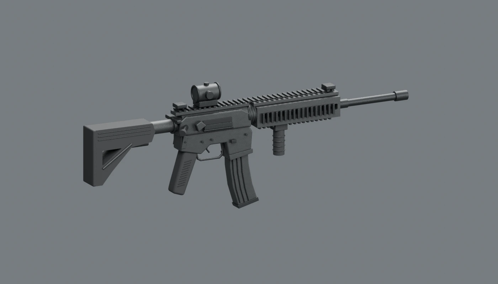

M4 · Current-day Golani
Selected using the IDF’s July 2026 M4 transition statement and August 2026 Golani photographs. Sliding stock, rail handguard and compact optic; exact attachment brands remain approximate.
Reference: IDF Golani photographs · 12 August 2026